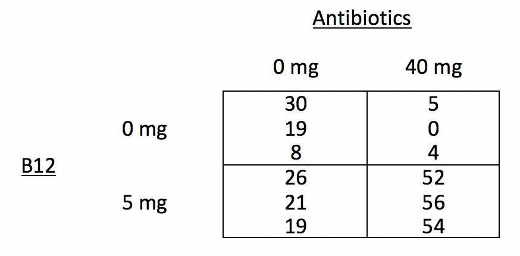
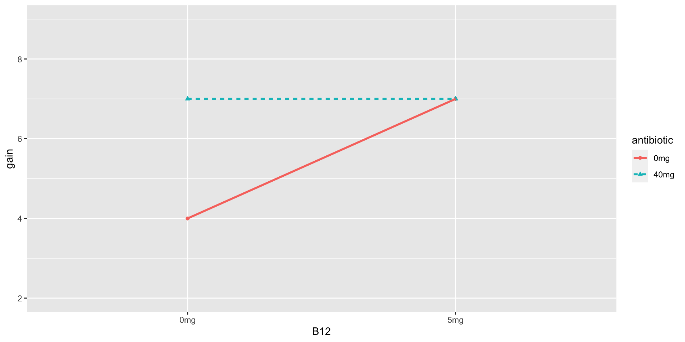
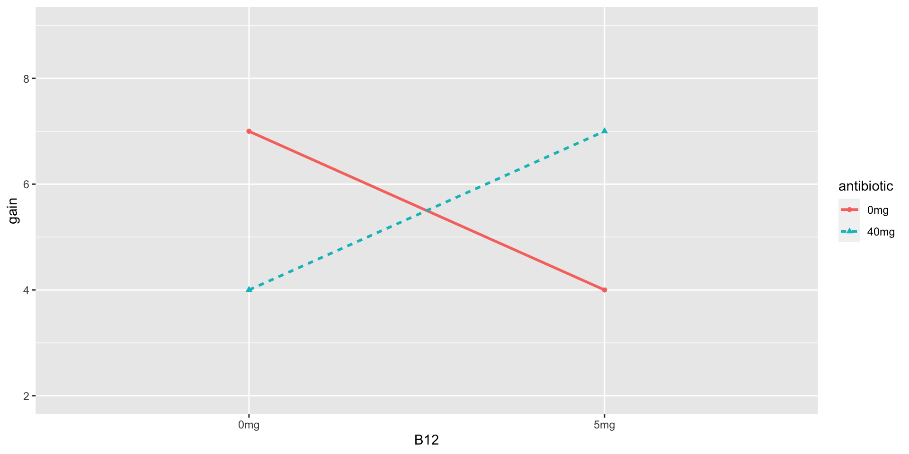
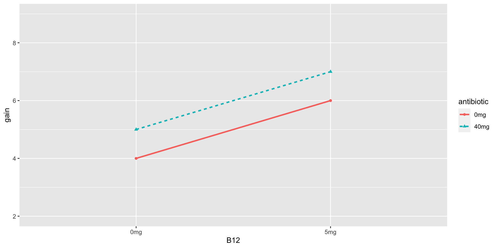
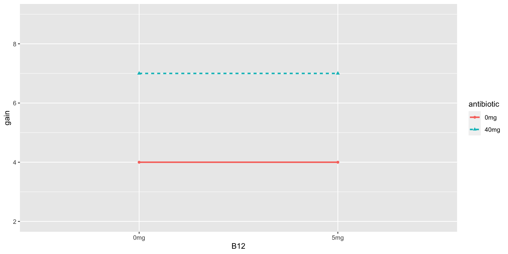

Fitting Two-Way Factorial Designs
Announcements
- Exam 1 grades by Thursday
- MSA feedback on Thursday
- HW 6 posted and due Friday Apr 5 11:59p
- Office hours
- Thurs: Cancelled
- Friday: 10:50a - 12:05p
- Where to get HW help
- Spinelli center tutoring Sun-Thurs 7-9p, Sabin-Reed 301.
- Post questions to #hw6-questions channel on Slack!
- Direct message me on Slack.
Agenda
- MP2 Group preferences
- Two-Way Factorial Design
- Interactions
- Fitting the ANOVA model
MP2 Group Preferences
Piglets
It seems natural to think that adding the right vitamins to a pig’s diet might produce fatter pigs faster. You’ve decided to study the effects of B12 in two doses (0mg and 5mg). But pigs have bacteria living in their intestines that might prevent the uptake of vitamins, so you decided to give antibiotics to the pigs in one of two doses (0mg or 40 mg). You design your experiment in such a way that 3 piglets are randomly assigned to each of the 4 treatment conditions. You measure their weight every day, and take each pig’s average daily weight gain as your final number recorded.
Two-Way Factorial Design Factor Diagram

- Draw the factor diagram
Research Questions in a Two-Way Factorial Design
- Does treatment A have an effect on the response variable?
- Is there a main effect of factor A?
- Does treatment B have an effect on the response variable?
- Is there a main effect of factor B?
- Does being in a specific combination of treatments have an effect over and above the additive effects of treatment A and B alone?
- Is there an interaction between factor A and factor B?
Interaction Graphs
For each of the following interaction graphs, answer the following questions with YES or NO.
- Is there a main effect of B12?
- Is there a main effect of antibiotics?
- Is there an interaction between B12 and antibiotics?
Example
Example: Answers

- YES
- YES
- YES
Practice 1

Practice 1

- NO
- NO
- YES
Practice 2

Practice 2

- YES
- YES
- NO
Practice 3

Practice 3

- NO
- YES
- NO
Two-Way Factorial Design Formulas
\[{y}_{ijk}={\mu}+{\alpha}_{i}+{\beta}_{j}+{\alpha\beta}_{ij}+{e}_{ijk}\]
- Where \(i\), from 1 to \(a\), is the level of the first factor,
- \(j\), from 1 to \(b\), is the level of the second factor,
- and \(k\), from 1 to \(n\), is the observation in each cell.
Sum of Squares (SS)
\[{SS}_{A} = \sum_{i=1}^{a}bn(\bar{y}_{i..}-\bar{y}_{…})^{2}\]
\[{SS}_{B} = \sum_{j=1}^{b}an(\bar{y}_{.j.}-\bar{y}_{…})^{2}\]
\[{SS}_{AB} = n\sum_{i=1}^{a}\sum_{j=1}^{b}(\bar{y}_{ij.}-\bar{y}_{i..}-\bar{y}_{.j.}+\bar{y}_{…})^{2}\]
\[{SS}_{E} = \sum_{i=1}^{a}\sum_{j=1}^{b}\sum_{k=1}^{n}({y}_{ijk}-\bar{y}_{ij.})^{2}\]
Degrees of Freedom (df)
\[{df}_{A}=a-1\]
\[{df}_{B}=b-1\]
\[{df}_{AB}=(a-1)(b-1)\]
\[{df}_{E}=ab(n-1)\]
Mean Squares (MS)
\[{MS}_{A}=\frac{{SS}_{A}}{{df}_{A}}\]
\[{MS}_{B}=\frac{{SS}_{B}}{{df}_{B}}\]
\[{MS}_{AB}=\frac{{SS}_{AB}}{{df}_{AB}}\]
\[{MS}_{E}=\frac{{SS}_{E}}{{df}_{E}}\]
Three Research Questions, Three F-ratios
- Is there a significant main effect of factor A?
- Is there a significant main effect of factor B?
- Is there an significant interaction between factor A and factor B?
F-ratios and the F-distribution
The ultimate statistics we want to calculate is Variability in treatment effects/Variability in residuals. The F-ratio.
\[F = \frac{{MS}_{A}}{{MS}_{E}}\]
\[F = \frac{{MS}_{B}}{{MS}_{E}}\]
\[F = \frac{{MS}_{AB}}{{MS}_{E}}\]
ANOVA Source Table for Two-Way Factorial
\[{y}_{ijk}={\mu}+{\alpha}_{i}+{\beta}_{j}+{\alpha\beta}_{ij}+{e}_{ijk}\]
| Source | SS | df | MS | F |
|---|---|---|---|---|
| Treatment A | \(\sum_{i=1}^{a}bn(\bar{y}_{i..}-\bar{y}_{…})^{2}\) | \(a-1\) | \(\frac{{SS}_{A}}{{df}_{A}}\) | \(\frac{{MS}_{A}}{{MS}_{E}}\) |
| Treatment B | \(\sum_{j=1}^{b}an(\bar{y}_{.j.}-\bar{y}_{…})^{2}\) | \(b-1\) | \(\frac{{SS}_{B}}{{df}_{B}}\) | \(\frac{{MS}_{B}}{{MS}_{E}}\) |
| Interaction AB | \(n\sum_{i=1}^{a}\sum_{j=1}^{b}(\bar{y}_{ij.}-\bar{y}_{i..}-\bar{y}_{.j.}+\bar{y}_{…})^{2}\) | \((a-1)(b-1)\) | \(\frac{{SS}_{AB}}{{df}_{AB}}\) | \(\frac{{MS}_{AB}}{{MS}_{E}}\) |
| Error | \(\sum_{i=1}^{a}\sum_{j=1}^{b}\sum_{k=1}^{n}({y}_{ijk}-\bar{y}_{ij.})^{2}\) | \(ab(n-1)\) | \(\frac{{SS}_{E}}{{df}_{E}}\) |
Two-Way Factorial in R
Teaching Methods
A professor wanted to compare three different teaching methods to determine how students
would perceive the course: 1) instructionist, 2) inquiry-based, and 3) team-based. She randomly assigned the same class (same topic different students) from 6 different semesters to treatments. At the end of the semester students were asked to rate the course on a 5-point scale, and the average class rating was calculated.
Anxiety and Memory
A psychologist wants to study the effect of anxiety on 4 different types of memory. Twelve participants are assigned to one of two anxiety conditions: 1) low anxiety group is told that they will be awarded $5 for participation and $10 if they remember sufficiently accurately, and 2) high anxiety group is told they will be awarded $5 for participation and $100 if they remember sufficiently accurately. All subjects perform four memory trials in random order, testing 4 different types of memory. The number of errors on each trial is recorded.